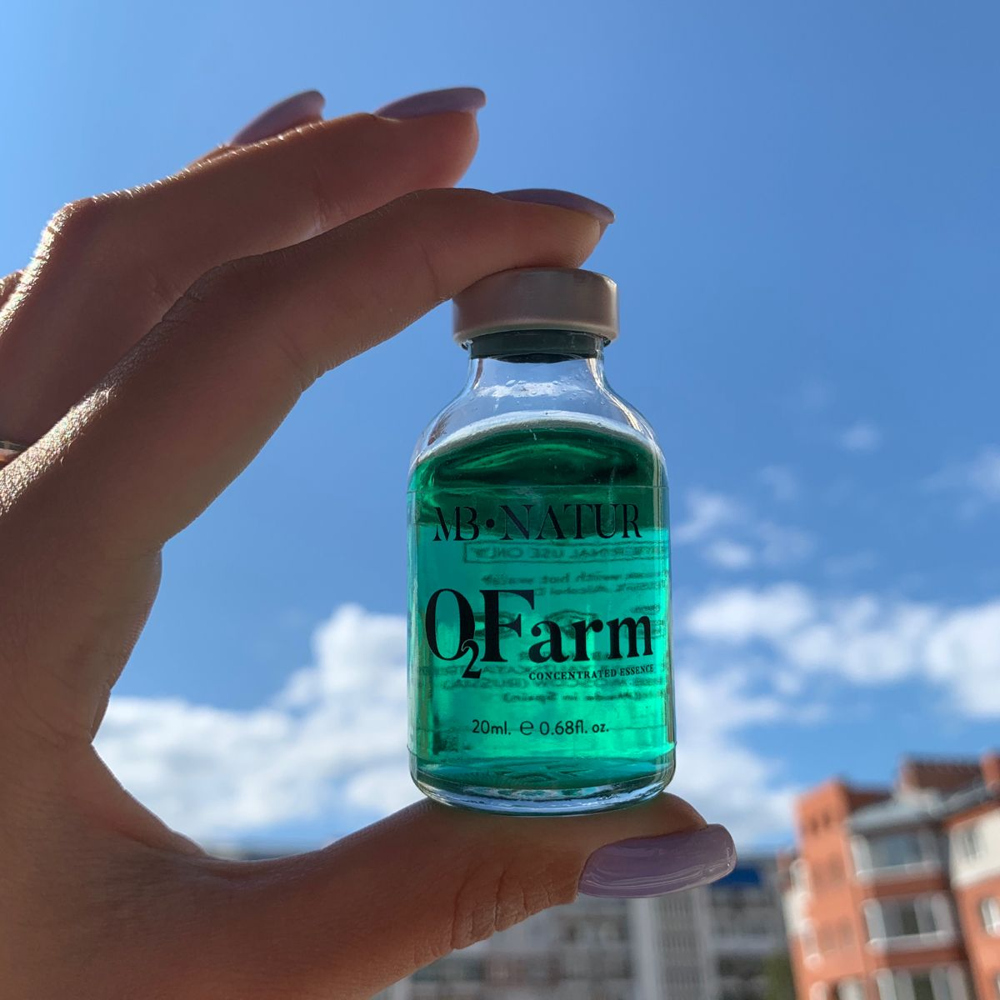

-
1. Долговременная укладка бровей
Естественные, широкие брови главный тренд последних лет. Но естественные не значит растрепанные и неухоженные. Брови должны быть аккуратными. А если их невозможно уложить обычными средствами или не получается отрастить до желаемой густоты, может помочь долговременная укладка бровей....
-

2. Существуют ли противопоказания?
Прежде всего, это нарушения целостности кожного покрова, шелушения, высыпания, заболевания и воспалительные процессы в зоне бровей. Очень чувствительная кожа также является противопоказанием. Не рекомендуется процедура и при повышенной ломкости волосков....
-

3. Плюсы долговременной укладки бровей
- Долговременная укладка позволяет экономить время при выполнении ежедневного макияжа.
- Результат не подвержен влиянию окружающей среды: можно не бояться капризов погоды дождя или снегопада. Брови будут выглядеть хорошо в любое время и при любых условиях.....
-
4. Как делается процедура?
- Сначала мастер очищает область бровей с помощью безмасляного средства для снятия макияжа. Прекрасно подойдет Мицеллярная вода с гиалуроновой кислотой и коллоидным серебром от Innovator Cosmetics.
- После следует обезжирить волоски. Рекомендуем использовать Солевой раствор Sexy Brow Henna. Скрабирование и пилинги при подготовке бровей не допускаются.....
-

5. Подсказки для начинающих
- Долговременная укладка сейчас пользуется большой популярностью. Хотите начать предлагать эту процедуру своим клиентам? В помощь вам мы подготовили чек-лист всего необходимого для ДУ....